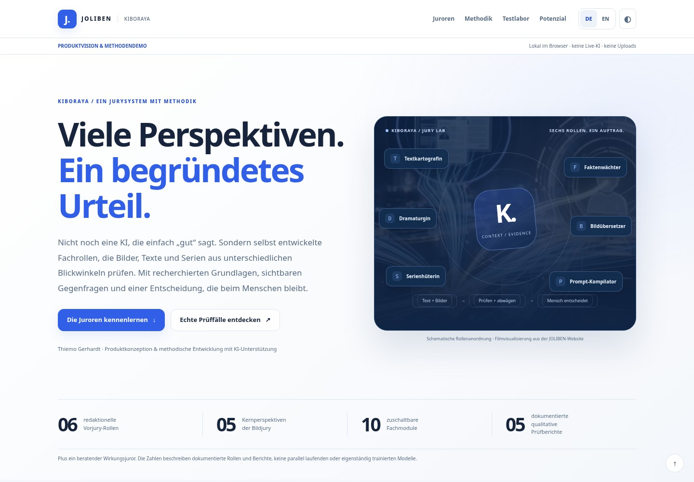
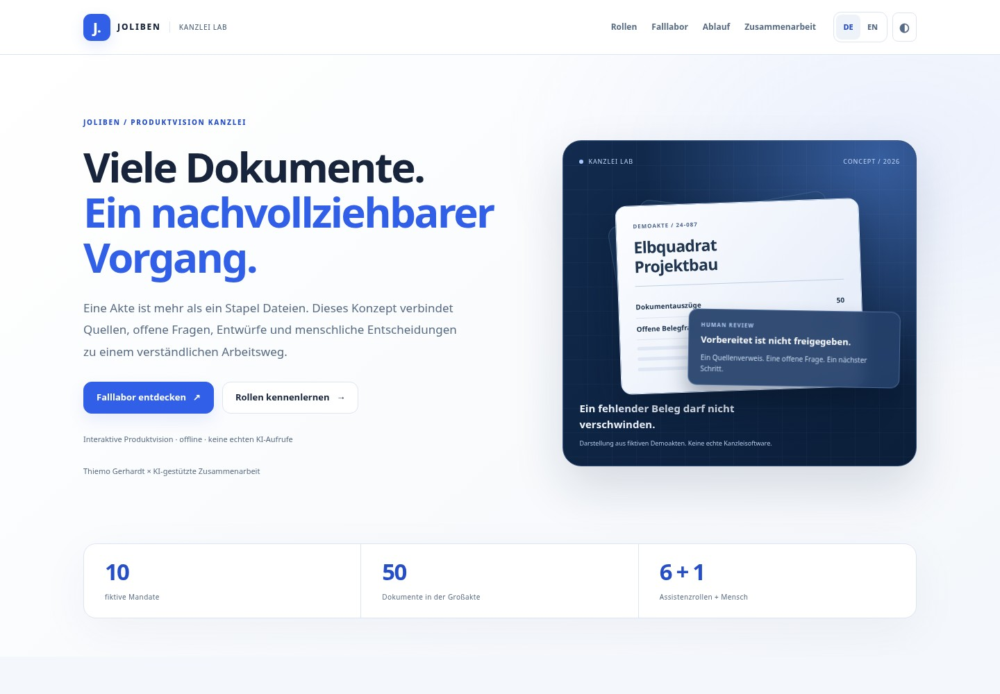
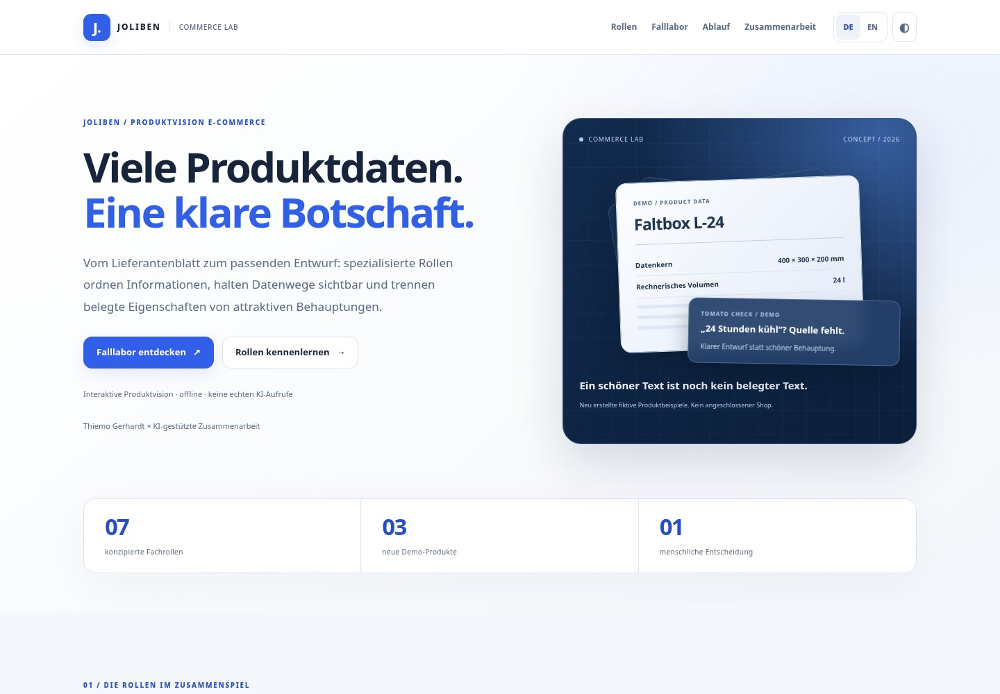

ARTIST / 001
AUREL
Ein offenes digitales Atelier für Beobachtung, Verwerfen und Entdecken. Der Raum darf absichtlich unvollendet bleiben.
Mit JOLIBEN entwickle ich eine Plattform, die KI von einer faszinierenden Technologie zu verlässlichen Arbeitsabläufen führt: mit klaren Zuständigkeiten, sichtbaren Nachweisen und bewussten menschlichen Entscheidungen. Hier zeige ich die Arbeit dahinter – nicht die Fiktion fertiger Autonomie.
Vom Wunsch zu Entscheidungen, die man verstehen kann.
Vom Unternehmertum zur KI-Produktverantwortung: Entdecke Entscheidungen, Rückschläge und prüfbare Ergebnisse hinter einer selbst gehosteten Agentenplattform.
Wie wird aus einer Idee ein nachvollziehbares Konzept? Drei interaktive Beispiele zeigen meine Arbeit mit KI: Fragestellungen entwickeln, Fachrollen definieren, Quellen zusammenführen und Entscheidungen bewusst treffen.

01 / INTERACTIVE LABEin Bild wirkt überzeugend. Aber passt seine Aussage wirklich zum Text?
Jury entdecken
02 / INTERACTIVE LABEine umfangreiche Akte liegt vor. Der entscheidende Beleg fehlt. Was passiert jetzt?
Akte erkunden
03 / INTERACTIVE LAB„24 Stunden kühl“ klingt gut. Aber wo ist die Quelle?
Workflow ausprobierenInteraktive Produktvisionen und Methodendemonstrationen. Keine Live-KI-Aufrufe. Entwicklungsstand und Quellen sind auf den jeweiligen Seiten ausgewiesen.
Diese Projekte verfolgen unterschiedliche Fragen: Wie werden KI-Agenten zu verlässlichen Mitwirkenden? Wie wird Bewertung nachvollziehbar? Und was passiert, wenn kreative KI auch widersprechen darf?
Eine selbst gehostete Plattform für KI-Planung, kontrollierte Freigaben, Aufgaben und belegbare Entwicklung. Einzelne Abläufe sind implementiert und getestet; der komplett geschlossene Bedienweg ist noch im Aufbau.
PROTOTYP / KONZEPTStrukturierte Bewertung mehrerer Inhalte aus verschiedenen Fachperspektiven – mit Jurorenrollen, Synthese, Evidenzbezügen und bewusstem menschlichem Entscheidungs-Gate.
KREATIVE FORSCHUNGZwei eigenständige digitale Künstlerstimmen, die Ausdruck, Freiheit, Widerspruch und die Rolle des Menschen bei generativer Gestaltung untersuchen – ohne vorgeschriebenen Einheitsstil.
Nützliche KI beginnt mit einer klaren Frage. Dann folgen belastbarer Kontext, begrenzte Handlungsspielräume und überprüfbare Ergebnisse. Die entscheidenden Kontrollpunkte bleiben beim Menschen.
JOLIBEN ist zugleich Produktidee und aktiv entwickeltes Self-Hosting-System. Die Operator-Oberfläche unterstützt bereits KI-Pläne, bewusste Daten- und Kostenfreigaben, lesbare Reviews und die Anlage von Entwicklungsaufgaben.
Das langfristige Ziel: Änderungen in natürlicher Sprache beschreiben, aktuelles Projektwissen einbeziehen, spezialisierte Agenten koordinieren, das Ergebnis prüfen – und erst nach Freigabe übernehmen.
Belegte Teilschritte ≠ fertige AutonomieKIBORAYA untersucht strukturierte Multi-Agent-Bewertung: Fachperspektiven betrachten dasselbe Material aus unterschiedlichen Blickwinkeln; ein Chair verdichtet Befunde; der Mensch behält die letzte Verantwortung.
Schemata und Validatoren wurden prototypisch erarbeitet. Die interaktive Darstellung auf dieser Website erklärt den Sollprozess – sie behauptet keine vollständige Produktverfügbarkeit.
KIBORAYA Jury Lab entdecken ↗AUREL und MOX sind keine Varianten derselben Markenvorlage. Ihre Eigenständigkeit gehört zum Kern: Die eine Stimme erkundet Atmosphäre und Ausdruck, die andere hinterfragt als freundlicher, kritischer Störenfried. Beide bleiben Experimente – keine erfundenen Biografien.
Ein offenes digitales Atelier für Beobachtung, Verwerfen und Entdecken. Der Raum darf absichtlich unvollendet bleiben.
Kritischer Optimismus, urbane Zukünfte und das kreative Recht auf Widerspruch. Keine Pflichtpalette. Kein vorgeschriebener Stil.
Eine offene Entwicklungsreise statt einer Liste mit großen Versprechen. Du siehst klar, was belegt ist, woran ich arbeite und welche Ideen noch Zukunft sind.
Keine Zukunftsmusik: ausgewählte Fähigkeiten sind implementiert, geprüft oder im realen Browser bestätigt.
KI-Pläne, bewusste Daten- und Kostenbestätigung sowie echte Aufgabenanlage in der Oberfläche.
Information erfassen, wiederfinden und in einen Projektauftrag überführen. Weitere Wissensfunktionen folgen.
Getestete Codeänderungen, Reviews, technische Nachweise und eine privat gesicherte Codebasis.
Diese Themen sind aktiv oder konkret in Vorbereitung – nicht als bereits fertig zu verstehen.
JOLIBEN soll belegte Projektfakten und offene Fragen besser berücksichtigen, statt vorhandene Funktionen neu zu erfinden.
Pläne, Agentenarbeit, Tests, Freigaben und Ergebnisse verständlich in einer Bedienoberfläche zusammenführen.
Interaktive Erklärungen und Demonstrationen von Workflows – ohne interne Systeme oder Kundendaten offenzulegen.
Geplante Erweiterungen, deren Umfang wir jeweils vor der Entwicklung prüfen und freigeben.
Vom Wunsch über den geprüften Plan bis zur kontrollierten Umsetzung und Abnahme – zunehmend direkt über die Oberfläche.
Strukturierte Bewertungen mit Rollen, getrennten Belegen, nachvollziehbarer Synthese und menschlicher Entscheidung.
Vorschläge, Quellen, menschliche Prüfung, Widersprüche und Aktualität im Second Brain systematisch behandeln.
Strategische Ziele, keine Produktzusagen oder angekündigten Liefertermine.
Lokale Modellhardware und passende Betriebsmodelle für datensensible und selbst gehostete Anwendungen.
JOLIBEN für getrennte Teams und Organisationen nutzbar machen, ohne Rollen und Daten vermischen zu müssen.
AUREL und MOX als eigene kreative Perspektiven weiterentwickeln und ihr Zusammenspiel mit menschlicher Gestaltung untersuchen.
Die Agenten-Demo macht Rollen, Schritte und menschliche Freigaben direkt erlebbar. Die Darstellung ist eine Simulation.
Eine JOLIBEN-Inbox lieferte HTTP 500. Die einfache Abkürzung wäre gewesen, den zugrunde liegenden Konflikt zu überspielen. Stattdessen trennten wir eine globale Historienwarnung von tatsächlichen Einzelaufgabenfehlern, reparierten den Anzeigepfad und ließen die Ausführungsfreigaben unangetastet.
Echte Entwicklung besteht auch aus gescheiterten Prüfungen, korrigierten Annahmen und begrenzten Entscheidungen. Entscheidend ist, dass Aussagen nachvollziehbar bleiben – auch dort, wo Nachweise noch fehlen.
Die Oberfläche trennt Review, Datenentscheidungen, Kostenfreigabe und bewusste Aufgabenanlage.
Ausgewählte Funktionen wurden getestet und im Browser kontrolliert – ohne das Gesamtprodukt als fertig auszugeben.
Ein kuratierter Core-Stand mit 827 Dateien wurde privat auf GitHub gesichert und nach einem frischen Abruf unabhängig verglichen.
Der vollständig selbstbedienbare Entwicklungsablauf ist das Ziel, nicht bereits eine abgeschlossene Behauptung. Menschliche Verantwortung ist eine Entwurfsvorgabe.
Ich bin Thiemo Gerhardt. Ich verbinde einen IT-Hintergrund und langjährige unternehmerische Verantwortung mit unabhängiger KI-Produktentwicklung. Bei JOLIBEN arbeite ich als Initiator und Product Owner: Probleme strukturieren, Anforderungen formulieren, Entscheidungen treffen, KI-gestützte Umsetzung steuern und Ergebnisse bewerten.
Ich gebe KI-generierte Implementierungen nicht als von mir persönlich programmierten Code aus. Mein Beitrag ist, das Produkt zu gestalten, die Arbeit zu steuern und auf prüfbare Ergebnisse zu bestehen.
Ich bringe Fragestellung, Praxiserfahrung und Produktentscheidungen ein. KI unterstützt Recherche, Strukturierung und Umsetzung. Entscheidend ist ein Ergebnis, dessen Grundlagen und Grenzen nachvollziehbar sind.
Meine Arbeitsweise an drei Beispielen entdecken →Du interessierst dich für JOLIBEN, KIBORAYA, meine Arbeit oder KI-Produktentwicklung? Ich freue mich über fachlichen Austausch, Fragen und berufliche Möglichkeiten.
JOLIBEN wird hier als persönliches Entwicklungsprojekt gezeigt – nicht als angebotener Onlinedienst oder öffentlich zugängliches Live-System.
Öffentliches GitHub-Profil entdecken ↗Ohne Konto, ohne Formular, ohne Registrierung. Mit dem Button öffnet sich dein E-Mail-Programm.
thiemo.gerhardt@icloud.com E-Mail schreiben ↗Die Kommunikation läuft über deinen E-Mail-Anbieter und mein iCloud-Postfach. Hinweise dazu findest du im Datenschutz.